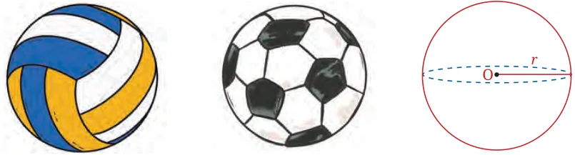
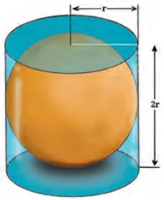
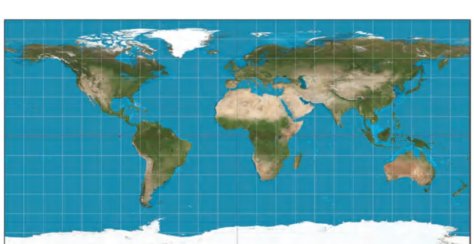
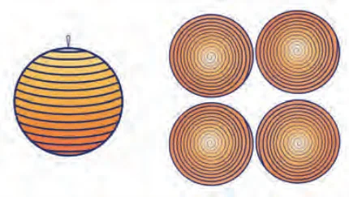
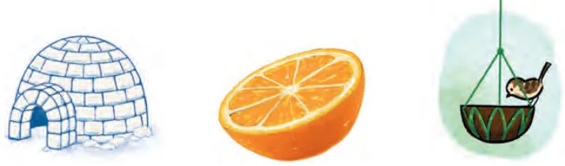

Lastly, we consider a familiar object in daily life: a ball or a sphere. This is the three-dimensional (3D) equivalent of a circle. Whereas a circle is the collection of all points in a plane that are at some given distance from some given point, a sphere is the collection of all points in 3D space that are at some given distance \(r\) (the radius of the sphere) from a given point O, the centre of the sphere. If we rotate the circle about any diameter, we obtain a hollow sphere.
Archimedes showed that the surface area \(A\) of a sphere with radius \(r\) is equal to \(4\pi r^{2}\). He did this by showing that the surface area of a sphere is exactly equal to the curved surface area of a cylinder with radius \(r\) and height \(h = 2r\) that fits tightly over the sphere, Fig. 14.12.

The curved surface area of such a cylinder is equal to
\(2\pi rh = 2\pi r \times 2r = 4\pi r^{2},\)
This is the formula obtained by Archimedes.

Source: https://en.wikipedia.org/wiki/Equirectangular_projection#/media/File:Equirectangular_projection_SW.jpg
Archimedes also found the formula for the volume \(V\) of a sphere:
\(V = \frac{4}{3}\pi r^{3}.\)
You will study the derivations of these formulas in later grades, using calculus.
But you may be able to find your own derivation of the formula by connecting it with the formula for volume of a cone; namely, by writing it as
\(V = \frac{1}{3} \times (4\pi r^{2}) \times r,\)
i.e., Volume of sphere \(= \frac{1}{3} \times\) surface area of sphere \(\times\) radius of sphere.
Try to work out the connecting links on your own.
*Visualising Volume Formula
14.5.1 Hands-on Activity to Verify the Formula for Surface Area of a Sphere
Have you ever played with a top? You must know how a string is wound around it. Take a rubber ball and drive a nail into it. Using the nail for support, wind a string tightly around the ball. When you have reached the ‘fullest’ part of the ball, use pins to keep the string in place, and continue to wind the string around the remaining part of the ball, till you have completely covered it; see Fig. 14.14. Mark the starting and finishing points on the string, and unwind the string from the surface of the ball. Now, measure the diameter of the ball and get its radius. On a sheet of paper, draw four circles with a radius equal to the radius of the ball. Fill the circles with the string you had wound around the ball (as shown in the figure).

The string, which had completely covered the surface of the sphere, has now been used to fill the four circles, all with the same radius as the sphere. So, the surface area of a sphere of radius \(r\) is equal to 4 times the area of a circle of radius \(r\), i.e., equal to \(4\pi r^{2}\). Hence, surface area of a sphere \(= 4\pi r^{2}\) where \(r\) is the radius of the sphere. This experimentally verifies the stated formula.
14.5.2 Hemisphere
A hemisphere is a three-dimensional solid formed when a sphere is cut into two equal halves by a plane passing through its centre. The flat circular region formed after cutting the sphere is called the base of the hemisphere. A hemisphere has one curved surface and one circular base. See Fig. 14.15.

You may also recall encountering the term hemisphere in the context of the Northern Hemispheres and the Southern Hemispheres in Geography.
Examples: Bowls, serving dishes, dome-shaped covers, planetariums and igloos.
Let the radius of the sphere be \(r\). The surface area of the complete sphere is \(4\pi r^{2}\). Therefore, the curved surface area of a hemisphere, which is half of the sphere, is \(2\pi r^{2}\).
The total surface area (TSA) includes the curved surface and circular base. The area of the circular base \(= \pi r^{2}\).
Hence \(\text{TSA} = 2\pi r^{2} + \pi r^{2} = 3\pi r^{2}\).
Volume of the hemisphere \(= \frac{2}{3}\pi r^{3}\).
Example 4: A hemispherical bowl has a radius of 3.5 cm. What would be the volume of water it would contain?
The volume of water the bowl can contain
\(= \frac{2}{3}\pi r^{3}\)
\(= \frac{2}{3} \times \frac{22}{7} \times 3.5 \times 3.5 \times 3.5\ \text{cm}^{3} = 89.8\ \text{cm}^{3}.\)